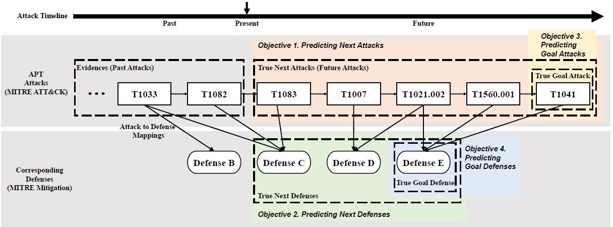

|
Insup Lee
Hi! I am an army captain working at the R.O.K. Cyber Operations Command, after finishing five years of invaluable experience in the Agency for Defense Development (ADD).
After receiving B.Eng. degree in cyber defense (CYDF) from Korea University, I am entering the sixth year of my seven-year mandatory military service.
Email / LinkedIn / Google Scholar / GitHub |

- Korea University, Seoul, Republic of Korea (Sep. 2019 - Present)
- Ph.D. student in Cybersecurity, School of Cybersecurity
- Academic advisor: Prof. Wonjun Lee (NetLab)
- Topic: Generative Models for Robust Intelligent Networks
- Korea University, Seoul, Republic of Korea (Mar. 2014 - Feb. 2018)
- B.Eng. in Dept. of Cyber Defense (CYDF; 사이버국방학과), Division of Information Security
Mandatory Military Service (Jun. 2018 - May 2025)
- R.O.K. Cyber Operations Command, Republic of Korea (Aug. 2023 - Present)
- Cyber Officer, ROK Army
- Topic: Detecting and Analyzing Network Threats
- Agency for Defense Development (ADD; 국방과학연구소), Seoul, Republic of Korea (Jul. 2018 - Jul. 2023)
- Researcher, Cyber Technology Center
- Topic: AI for Cybersecurity & Cyber Threat Intelligence
- Korea Defense Intelligence Command, Republic of Korea (Nov. 2020 - Mar. 2021)
- Return to ADD after 5-month KDIC dispatch (Apr. 2021)
- Generative Models for Intelligent Communications
- Adversarial Robustness in Intelligent Networks
- Embedding and Data Augmentation for Cyber Threat Intelligence
- Generative Models for Host Intrusion Detection Systems
- ML for Network Intrusion Detection Systems
Research at Korea University (Sep. 2019 - Present)
- Scalable Generative Models for Adversarial Robustness in Intelligent Networks (May 2020 - Present)
- Advisor: Prof. Wonjun Lee
- Keywords: generative models, adversarial ML, GAN, intelligent modulation classification
- Frameworks/Tools: PyTorch, IBM ART (Adversarial Robustness Toolbox)
- Publications: [J1], [J5]
- Continual Learning for Network Intrusion Detection Systems (Sep. 2019 - May 2020)
- Advisor: Prof. Wonjun Lee
- Keywords: network IDS, incremental learning, encrypted traffic classification, CIC-IDS2017
- Frameworks/Tools: scikit-learn
- Publications: [C3]
-
Disrupting Objectives of Nation State-Sponsored Cyber Attacks (Apr. 2021 - Jul. 2023)
- Advisor: Dr. Changhee Choi
- Keywords: CTI, NLP, embedding, data augmentation, cyber campaign, SOAR, MITRE ATT&CK, TTPs
- Frameworks/Tools: PyTorch, FastAPI, Git, PostgreSQL
- Publications: [J2], [J3], [J4]
- Cybersecurity Data Augmentation Based on Machine Learning (Jun. 2019 - Oct. 2020)
- Advisor: Dr. Changhee Choi
- Keywords: generative models, host IDS, sequence data, CycleGAN, SeqGAN, ADFA-LD
- Frameworks/Tools: TensorFlow, Node.js, Git
- Publications: [C1], [C2]
- IPADS: Integrated Proactive and Adaptive Defense System (Aug. 2018 - May 2019)
- Participation in Project Preparation
- Keywords: anomaly detection, host IDS, machine learning, in-vehicle network
- Frameworks/Tools: scikit-learn
 |
[J5]
UniQGAN: Towards Improved Modulation Classification With Adversarial Robustness Using Scalable Generator Design
Insup Lee and Wonjun Lee IEEE Transactions on Dependable and Secure Computing (TDSC), accepted for publication, 2023. SCI 2022 I/F: 7.3; Top 5.56% Impact Factor in CS, Software Engineering |
 |
[J4]
Camp2Vec: Embedding Cyber Campaign With ATT&CK Framework for Attack Group Analysis
Insup Lee and Changhee Choi ICT Express, accepted for publication, 2023. SCI 2022 I/F: 5.4; Top 28.41% Impact Factor in Telecommunications |
 |
[J3]
Exploiting TTP Co-occurence via GloVe-Based Embedding With ATT&CK Framework
Chanho Shin, Insup Lee, and Changhee Choi IEEE Access, accepted for publication, 2023. SCI 2022 I/F: 3.9; Top 36.36% Impact Factor in Engineering, Electrical & Electronic |
|  |
[J2]
BAN: Predicting APT Attack Based on Bayesian Network With MITRE ATT&CK Framework
Youngjun Kim, Insup Lee, Hyuk Kwon, Gyeongsik Lee, and Jiwon Yoon IEEE Access, Vol. 11, pp. 91949-91968, Aug. 2023. SCI 2022 I/F: 3.9; Top 36.36% Impact Factor in Engineering, Electrical & Electronic |
 |
[J1]
UniQGAN: Unified Generative Adversarial Networks for Augmented Modulation Classification
Insup Lee and Wonjun Lee IEEE Communications Letters (CL), Vol. 26, No. 2, pp. 355-358, Feb. 2022. SCI 2022 I/F: 4.1; Top 43.18% Impact Factor in Telecommunications |
 |
[C3]
Encrypted Malware Traffic Detection Using Incremental Learning
Insup Lee, Heejun Roh, and Wonjun Lee IEEE International Conference on Computer Communications (INFOCOM) - Poster Session, Jul. 2020. |
 |
[C2]
Anomaly Dataset Augmentation Using Sequence Generative Models
Sunguk Shin, Insup Lee, and Changhee Choi IEEE International Conference on Machine Learning and Applications (ICMLA), Dec. 2019. |
 |
[C1]
Opcode Sequence Amplifier Using Sequence Generative Adversarial Networks
Changhee Choi, Sunguk Shin, and Insup Lee International Conference on ICT Convergence (ICTC), Oct. 2019. |
- Software outsourcing, KCMVP-certified cryptographic module of 25,000 LoC with C (Jun. 2017 - Mar. 2018)
- ARIA block cipher (mode: ECB/CBC/CTR), Hash (SHA256/SHA512) and HMAC-based DRBG (with entropy source) for Windows (.dll) and Linux (.so)
- Studied cryptographic module standards including FIPS 140-2, NIST SP800-22 and TTAK.KO-12.0306
- Tested by national security research institute (NSR) and certified by national intelligence service (NIS)
- Programming Languages: Python, C, JavaScript, SQL, HTML, CSS, PHP, SPL (Splunk)
- Frameworks/Tools: PyTorch, TensorFlow, scikit-learn, Git, PostgreSQL, Notion, Slack
Domestic Journal & Conference Papers
- Insup Lee, Chanho Shin, and Changhee Choi, “Mutating Cyber Camapaign With TTP Word Replacement,” in Proceedings of the KIMST Annual Conference, Jun. 2023.
- Chanho Shin, Insup Lee, and Changhee Choi, “Towards GloVe-Based TTP Embedding With ATT&CK Framework,” in Proceedings of the KIMST Annual Conference, Jun. 2023.
- Changhee Choi, Insup Lee, Chanho Shin, and Sungho Lee, “Cyber Threat Campaign Analysis Based on PEGASUS and RoBERTa Model,” in Proceedings of the KIMST Annual Conference, Jun. 2023.
- Insup Lee, Chanho Shin, Sunguk Shin, Seongyeon Seo, and Changhee Choi, “Analyzing Cyberattack Campaign Similarity via TTP Sequence Embedding,” in Proceedings of the KIMST Annual Conference, Jun. 2022.
- Sunguk Shin, Insup Lee, Chanho Shin, Seongyeon Seo, and Changhee Choi, “Cyber Campaign Analysis With TTP Embedding Using TF-IDF,” in Proceedings of the KIMST Annual Conference, Jun. 2022.
- Chanho Shin, Sunguk Shin, Insup Lee, Seongyeon Seo, and Changhee Choi, “Classifying TTP Based on CIA Labeling,” in Proceedings of the KIMST Annual Conference, Jun. 2022.
- Changhee Choi, Chanho Shin, Sunguk Shin, Seongyeon Seo, and Insup Lee, “Cyber Attack Group Classification Using Siamese LSTM,” in Proceedings of the KIMST Annual Conference, Jun. 2022.
- Chanho Shin, Sunguk Shin, Seongyeon Seo, Insup Lee, and Changhee Choi, “Embedding and Training RNN to Estimating the Goal of Cyber Attack,” in Proceedings of the KIMST Fall Conference, Nov. 2021.
- Sunguk Shin, Chanho Shin, Seongyeon Seo, Insup Lee, and Changhee Choi, “The Proposed Approach for Country Prediction With TTP-based Cyber Data Using GCN,” in Proceedings of the KIMST Fall Conference, Nov. 2021.
- Changhee Choi, Chanho Shin, Sunguk Shin, Seongyeon Seo, and Insup Lee, “Deep Learning for Estimating Next Action of Cyber Attack,” in Proceedings of the KIMST Fall Conference, Nov. 2021.
- Yongbin Park, Sunguk Shin, and Insup Lee, “A Study on Evaluation Method of NIDS Datasets in Closed Military Network,” Journal of Internet Computing and Services (JICS), Vol. 21, No. 2, pp. 121-130, Apr. 2020.
- Changhee Choi, Chanho Shin, Sunguk Shin, Seongyeon Seo, and Insup Lee, “Method for Training Attack Prediction Model and Device Therefor,” U.S. Patent Application Number. 18/126,005, March 24, 2023.
- Changhee Choi, Chanho Shin, Sunguk Shin, Seongyeon Seo, and Insup Lee, “Method for Training Attack Prediction Model and Device Therefor,” Korea Patent Application Number. 10-2022-0037634, March 25, 2022.
- Changhee Choi, Sunguk Shin, and Insup Lee, “Appratus, Method, Computer-readable Storage Medium And Computer Program For Generating Operation Code,” Korea Patent Application Number. 10-2019-0141865, November 07, 2019; Korea Patent Number. 10-2246797, April 30, 2021.
- Changhee Choi, Sunguk Shin, and Insup Lee, "Log Extractor For Windows 10 Internet, Event, Process, and Network," Software Registration No. C-2020-035358, October 14, 2020.
Last Update: August 2023